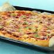

Pizza recipe

Dette er en langpannepizza laget på ekte 80-talls vis. Lørdagen ble liksom aldri den samme uten pizza med kjøttfyll, ost og paprika. Tro det eller ei, den er like populær som familiekos den dag i dag
Ingrediens
400g kjøttdeig
2 ss olje
2 ss tomatpiure
Gjennomførelse
- Rør ut gjær i lunkent vann. Tilsett olje, salt og mel. Elt deigen godt sammen, og la den heve til dobbel størrelse.
- Brun kjøttdeig i olje på sterk varme i to omganger. Ha kjøttdeigen tilbake i stekepannen.0
- Tilsett hakket løk, hvitløk, tomatpuré, hermetiske tomater og vann. La sausen småkoke i ca. 10 minutter til den tykner. Smak til med salt, pepper og basilikum.
- Kjevle ut deigen. Ha den over på en bakepapirkledd langpanne og fordel kjøttsausen utover deigen. Dryss over revet ost, og ha på paprika.
- Stek pizzaen midt i forvarmet ovn (over- og undervarme) på 225 °C i ca. 20 minutter.